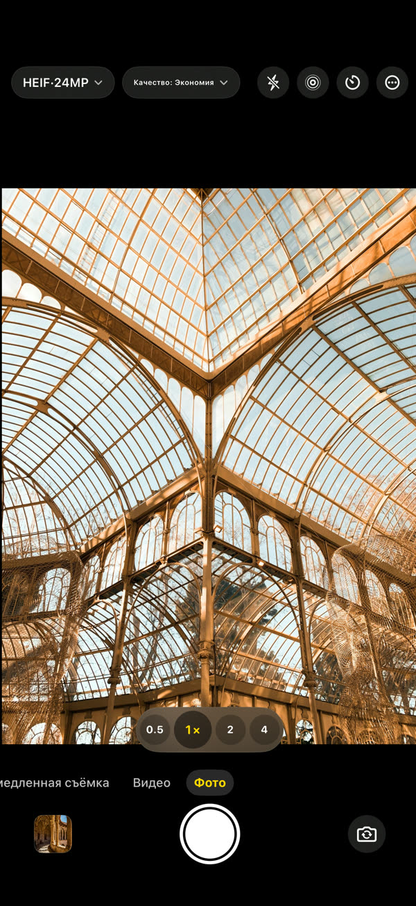
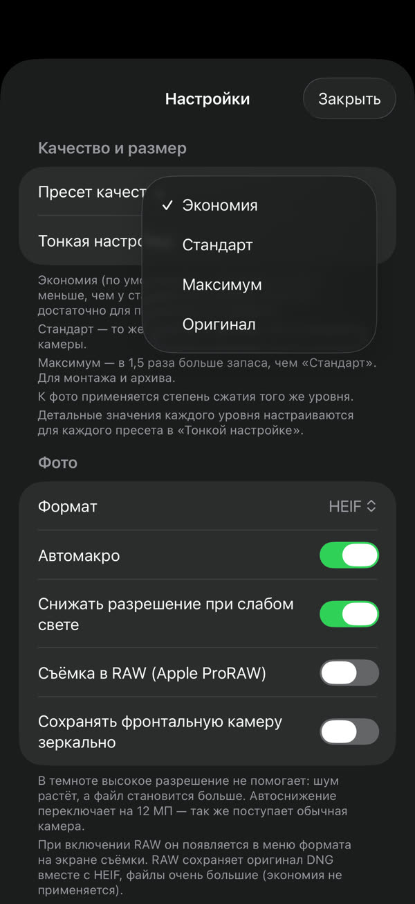
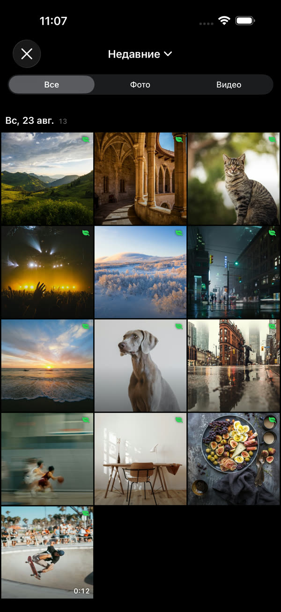
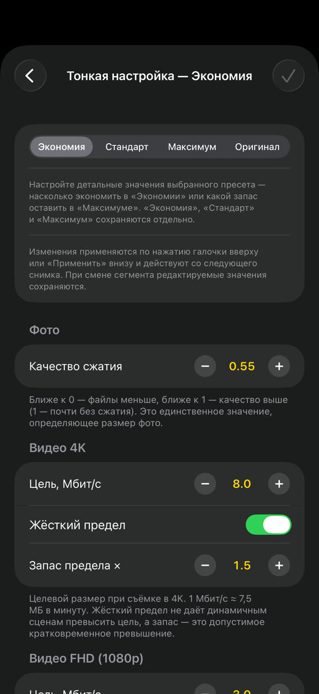
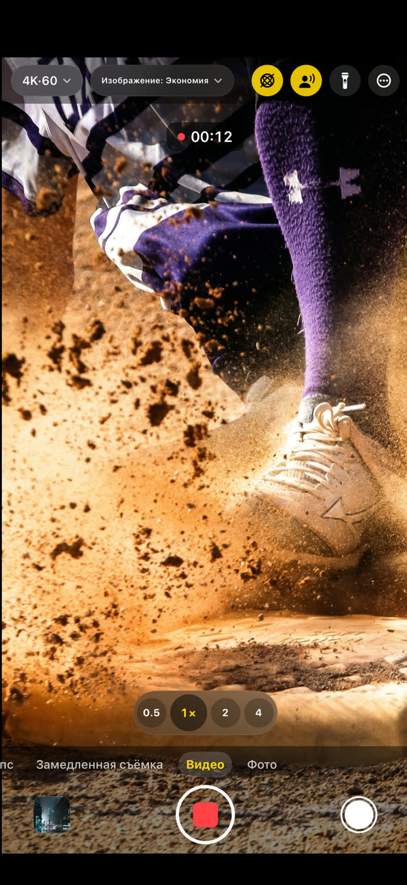

GramCamera
Тот же кадр, меньше файл.
GramCamera снимает так же, как обычная камера, но сохраняет файлы меньшего размера. Размер снижается без заметной потери качества — того же места хватает намного дольше.
Загрузите в App StoreiOS 17 или новее · iPhone и iPad

Каждый снимок — примерно на 60% меньше места.
Фото3,7 МБ → 1,5 МБ≈ 60 %
Видео 4K169 МБ → 60 МБ / мин64%
Видео FHD60 МБ → 23 МБ / мин62%
Выберите, снимайте, смотрите экономию.




Всё нужное уже внутри.
Вы решаете, сколько экономить
Экономия, Стандарт или Максимум. В тонкой настройке задаётся целевой размер для каждого разрешения
Сразу в «Фото»
Отдельной медиатеки нет. Снимки попадают в системное приложение «Фото»
Экономия видна
У каждого снимка видно, насколько он меньше, чем у обычной камеры
Настоящая камера
Фото, видео, замедленная съёмка, таймлапс, 4K 60 к/с, HDR-видео, пространственное аудио, объективы и макро
Всё остаётся на устройстве
Снимки хранятся на устройстве и в медиатеке. Без учётной записи и входа — Конфиденциальность